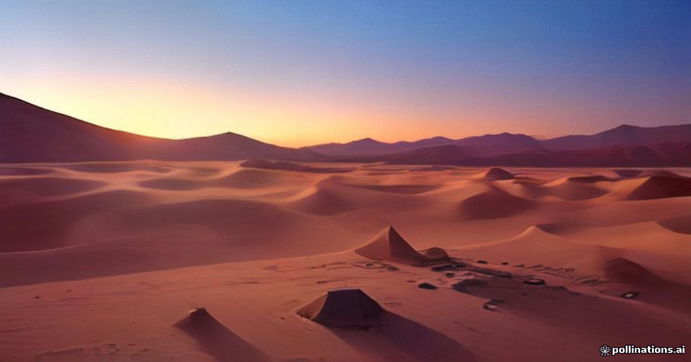

Traveling through Morocco and into the Erg Chebbi dunes during Ramadan is entirely feasible, but it requires adjusting your expectations regarding pace, meal timing, and local service rhythm. As long-distance desert operators, we do not pause operations during Ramadan; our drivers and camp staff continue working while fasting from dawn to sunset.
For non-Muslim visitors, the desert experience remains largely intact—you will not be expected to fast, and private desert camps continue serving breakfast, lunch, and dinner. However, daylight road trips involve subtle operational shifts, such as quieter roadside stops, earlier afternoon camp arrivals, and shifting dinner schedules to align with Iftar (breaking the fast).
Road Logistics and Driver Energy During Fasting Hours
Driving from Marrakesh or Fes to Merzouga involves 8 to 10 hours on the road. During Ramadan, drivers refrain from food and water from dawn until dusk. Professional drivers are accustomed to this routine, but long stretches across the High Atlas or Ziz Valley require careful energy management.
We recommend adopting /blog-strategic-morning-departure-times-marrakech-fes to maximize driving hours while your driver is freshest. Avoid pushing for late afternoon sightseeing detours right before sunset, as drivers need to reach a safe stop or the camp in time to break their fast with dates, water, and warm soup.
Adjusted Camp Meal Schedules and Dining
At desert camps, meal logistics are modified slightly to accommodate both guest needs and staff breaking their fast. Guests are still served regular meals, but lunch stops along the transfer route require pre-planning since many small rural cafes close during daylight hours.
For dinner at the camp, service typically starts shortly after sunset Iftar begins. Camp staff break their fast first before serving guest courses. Check our notes on /blog-dietary-restrictions-sahara-desert if you have specific meal requests, as kitchen prep timing is tighter during Ramadan.
- Roadside lunch stops are limited to established tourist spots or pre-packed meals.
- Dinner service at camp usually begins 30 to 45 minutes after sunset.
- Early morning breakfast before sunrise (Suhoor) may increase early kitchen activity.
Daytime Etiquette for Non-Fasting Visitors
You are not expected to fast, but consuming food, drinking water, or smoking openly in public village spaces during daylight hours can feel insensitive to locals abstaining in high heat. Inside your private transfer vehicle or at your private desert camp, you can eat and hydrate freely.
When walking through towns like Ouarzazate, Rissani, or Erfoud, keep water bottles inside your daypack and step away from public view when taking a drink. Respectful behavior is deeply appreciated by local hosts and roadside shopkeepers.
Alcohol Availability and Evening Camp Atmosphere
Alcohol sales are restricted across Morocco during Ramadan. Mainstream supermarkets stop selling alcohol, and small town stores close their alcohol inventory entirely.
If you wish to have wine or beer at your camp, you should purchase it in Marrakesh or Fes prior to departure. Review /blog-buying-and-drinking-alcohol-at-erg-chebbi-camps for details on camp policies and discreet consumption during the holy month.
Atmosphere and Evening Music at Erg Chebbi
The evening atmosphere in Erg Chebbi camps during Ramadan is often quieter and more reflective. While campfires and traditional Amazigh drumming still take place after dinner, celebrations tend to be lower key out of respect for the tone of the month.
The upside is a peaceful desert experience with fewer tourist crowds and quieter night trails, giving visitors an authentic insight into how rural southern communities observe their sacred traditions.
| Aspect | Standard Month | Ramadan Period |
|---|---|---|
| Roadside Cafes | Open all day along transfer routes | Many rural cafes closed until sunset; tourist hubs remain open |
| Departure Times | Flexible morning start (8:00 AM) | Strict early start recommended (7:00 - 7:30 AM) |
| Camp Dinner Service | Served between 7:30 PM - 8:30 PM | Served 30-45 mins after sunset Iftar |
| Alcohol Retail Sales | Available in major towns & select camps | Retail stores closed; bring from initial city if permitted |
| Desert Camp Evening Vibe | Lively post-dinner campfire and music | Peaceful, subdued post-dinner campfire session |

Illustration, not a photograph — for the real thing, you'll have to stand on the ridge yourself.
Quick answers
A few follow-up questions travelers ask about this.
Is it rude to eat or drink in front of my desert tour driver during Ramadan?
Drivers expect non-Muslim guests to eat and drink normally. Hydrating inside the private vehicle is completely fine, though avoiding constant snacking directly next to your driver is a polite courtesy.
Are Sahara desert camps fully operational during Ramadan?
Yes, luxury and standard desert camps in Erg Chebbi operate continuously. Tents, private bathrooms, hot water, camel treks, and meals remain fully operational.
Does Ramadan affect camel trekking or desert quad tours?
Excursions operate as normal, but early morning schedules are favored. Midday exertion under the sun is minimized to protect guide and camel handler stamina while fasting.
Planning your own route?
Tell us your dates and what matters to you — we'll answer with a straight recommendation, not a brochure.
Send an inquiry See the itineraries